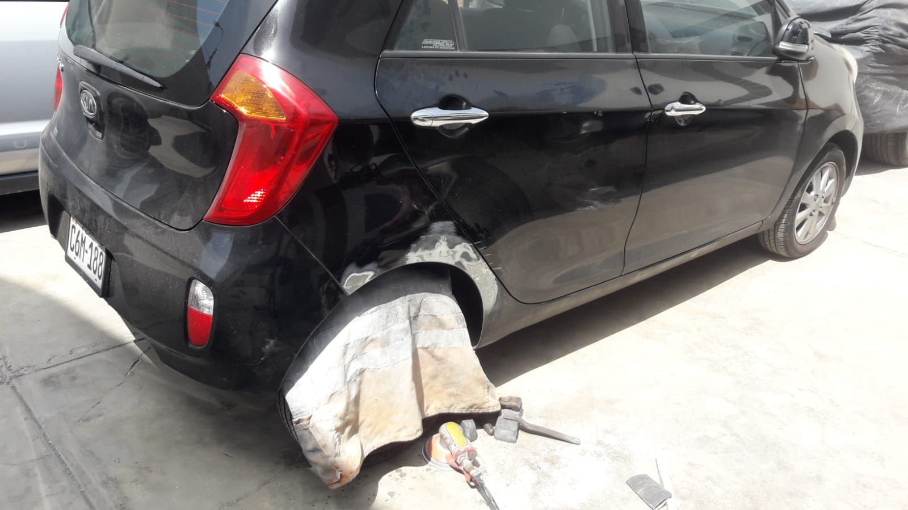
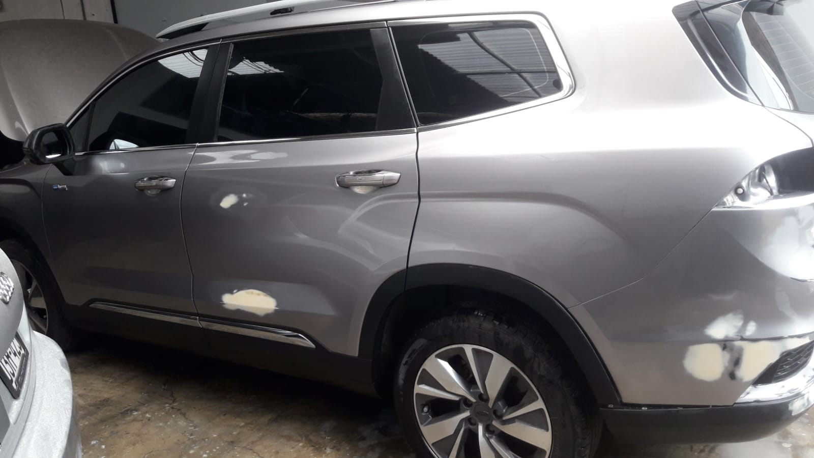
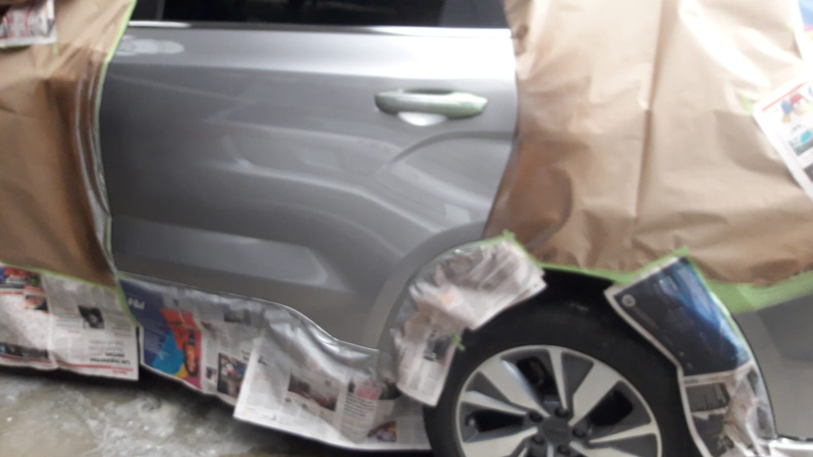

Estética Automotriz A1
Olvídate de los acabados ordinarios. Nos especializamos en devolverle el valor y la elegancia original a vehículos de alta gama y proyectos clásicos con acabados espejo perfectos.
📱 Cotizar por WhatsApp
Olvídate de los acabados ordinarios. Nos especializamos en devolverle el valor y la elegancia original a vehículos de alta gama y proyectos clásicos con acabados espejo perfectos.
📱 Cotizar por WhatsApp
Procesos minuciosos diseñados para dueños exigentes que no aceptan imperfecciones.

Corregimos los daños directamente en la lata utilizando tecnología de desabollado por puntos (spotter). Esto evita estirar o debilitar la estructura original del vehículo.

Aplicación técnica con acabados espejo profundos y limpios. Logramos una superficie perfectamente uniforme y libre de piel de naranja bajo los más altos estándares.
No maquillamos los autos. Aplicamos capas ultra-finas de masilla técnica solo donde es estrictamente necesario, protegiendo cada rincón.

Nuestra prioridad es la nivelación perfecta del metal vivo. Solo usamos espesores milimétricos de masilla protectora para asegurar que el trabajo jamás se resquebraje.

Protegemos de manera milimétrica cada jebe, neumático, luna y componente electrónico del vehículo para garantizar un entorno libre de pulverizaciones indeseadas.

Entregamos tu vehículo impecable por fuera y libre de polvo o polvillo en el motor. Respetamos y cuidamos la pulcritud original de la ingeniería del auto.
Revivimos las líneas originales y devolvemos la gloria a proyectos especiales con dedicación artesanal.

Una reconstrucción total de la carrocería exterior. Tratamiento profundo de superficies, nivelación simétrica del maletero y aplicación de pintura poliuretana con un reflejo espejo impecable, conservando los emblemas de fábrica.
Ver más proyectos por WhatsApp →